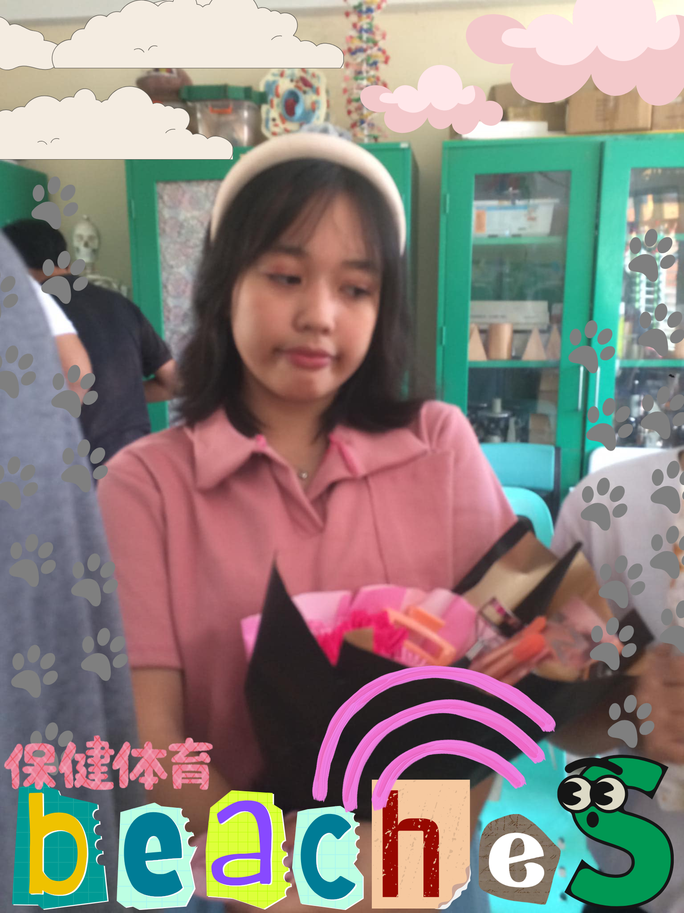
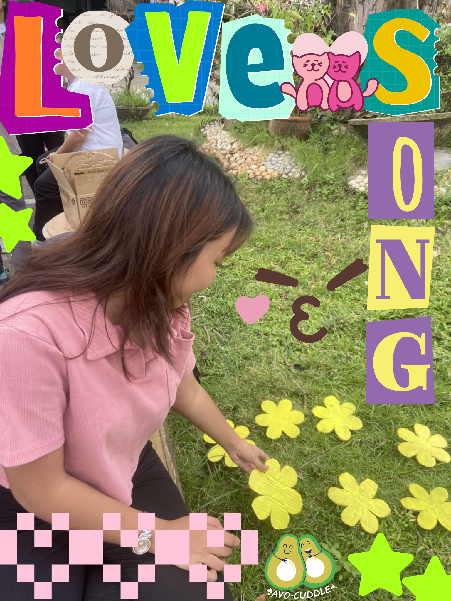
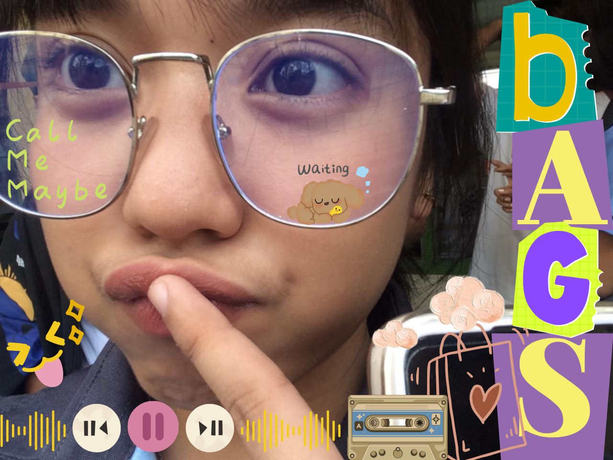
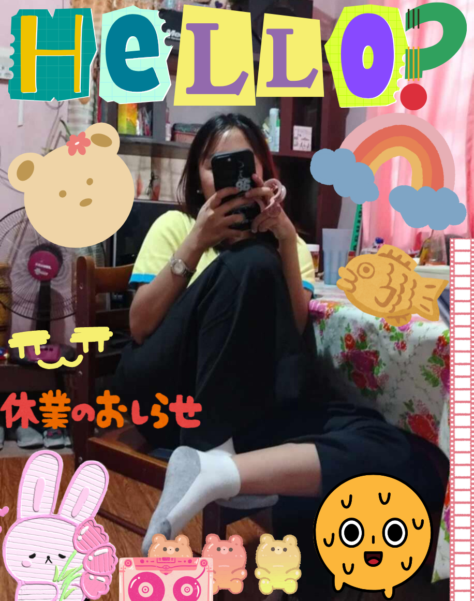

Spinning out on what to say or what to do
Finding reasons for my constant change in mood
I'll see it to believe it," but who knows the actual truth
'Cause I'm sure now, I'm sure
'Cause days blend to one when I'm on the right beaches
And the walls painted white, they tell me all the secrets
Don't wait for the tide just to dip both your feet in
'Cause I'm sure now, I'm sure
Find it hard to say, I know that I'm alright
Took a while for me to finally realize
That when I see it, I'll believe it, giving me a peace of mind
I'm sure now, I'm surе
'Cause days blend to one whеn I'm on the right beaches
And the walls painted white, they tell me all the secrets
Don't wait for the tide just to dip both your feet in
'Cause I'm sure now, I'm sure
'Cause some days I'm afraid to fall down
But I understand the coming outcome
Pick it up if I allow it
Can't help it, can't help
'Cause days blend to one when I'm on the right beaches
And the walls painted white, they tell me all the secrets
Don't wait for the tide just to dip both your feet in
'Cause I'm sure now, I'm sure

I didn't think I'd ever want this yet
When we had first met in the fall
Guess it's something you learn to accept
When I've been a mess it's not your fault
But I keep forgetting it's what we do
I missed the train again
I called your name
As if you'd drive it back
I swear you're in my head
Throughout the day
I can say that for a fact
Know we had better days
But to keep me sane
I guess that this is just another love song
About you
Just another love song
About you
Do-do-do-do, do-do-do-do
Do-do-do-do, do-do-do-do
Do-do-do-do, do-do-do-do
Do-do-do-do
I'm running over sentences at times
I'd better quit dreaming just so I could write
Yet the words to describe you aren't so hard to find
Like a good quote from a book that I've memorized
But I keep forgetting just what to do
I missed the train again
I called your name
As if you'd drive it back
I swear you're in my head
Throughout the day
I can say that for a fact
Know we had better days
But to keep me sane
I guess that this is just another love song
About you
Just another love song
About you
Do-do-do-do, do-do-do-do
Do-do-do-do, do-do-do-do
Do-do-do-do, do-do-do-do
Do-do-do-do
Do-do-do-do, do-do-do-do
Do-do-do-do, do-do-do-do
Do-do-do-do, do-do-do-do
Do-do-do-do

Every second counts
I don't wanna talk to you anymore, and
All these little games
You can call me by the name I gave you yesterday, yeah
Every minute counts
I don't wanna watch TV anymore, yeah
Can you figure me out?
Just doin' this to waste more time on the couch
Can you see me? I'm waiting for the right time
I can't read you, but if you want, the pleasure's all mine
Can you see me using everything to hold back?
I guess this could be worse
Walking out the door with your bags
Walking out the door with your bags
Walking out the door with your bags
Walking out the door with your bags
Pour your glass of wine
Mitchell told me I should be just fine (Yeah)
Cases under the bed
Spill it open, let it rush to my head
I don't wanna be forward, I don't wanna cut corners
Savor this with everything I have inside of me
I'm not the type to run
I know that we're having fun
But what's the rush? Kissing, then my cheeks are so flushed
Tell you how I felt
Sugar coated melting in your mouth
Pardon my emotions
I should probably keep it all to myself
Know you'd make fun of me
Know you'd make fun of me
Know you'd make fun of me
Know you'd make fun of me
Can you see me? I'm waiting for the right time
I can't read you, but if you want, the pleasure's all mine
Can you see me using everything to hold back?
I guess this could be worse
Walking out the door with your bags
Walking out the door with your bags
Walking out the door with your bags
Walking out the door with your bags

Are you into me, like I'm into you?
Do you wanna do the things I wanna do with you?
You're so close, and yet so far
I wonder how you look when you're in the dark
You're just one click away, click away, click away
From something real or fake, real or fake, real or fake
You're just one click away, click away, click away
From something real or fake, real or fake, real or fake
Played you DOOM, man, you play Drake
You left crumbs all on my face
Taste like RiRi, taste like Bey
Bought you Fenty, took his place
Rolled your weed and kissed your face
Man, wanna smoke you out like all-day
Man, wanna do a quickie in the hallway, can
You be all down for the boy, no mass
Hot jump, skip rope, twenty-three years old
Made a hundred grand and went broke, I'm an asshole
Clairo, will you be my real or my fake though?
Pesos, cashing out checks when I say so
Frame my life and take my soul
Make me crazy, make me old
Save me roses, text my phone
Fake like rappers, fake like jokes
I know
You're just one click away, click away, click away
From something real or fake, real or fake, real or fake
You're just one click away, click away, click away
From something real or fake, real or fake, real or fake

At the best of times, I'm lonely in my mind
But I can find something to show you
If you have got the time why would I rely on the things that I did right?
She said, "I gave you four years of my life"
So
What about these feelings I've got?
We got it wrong and you said you'd had enough
What about these feelings I've got?
I couldn't be more in love
I could have been a great line
I could have been a sign or overstayed my time
Say what's on your mind
Maybe I'll rely on all the things that made it right
Because I'd give you all the years of my life
So
What about these feelings I've got?
We got it wrong and you said you'd had enough
But what about these feelings I've got?
I couldn't be more in love
And what about these feelings I've got? (Ooh)
We got it wrong and you said you'd had enough
But what about these feelings I've got?
I couldn't be more in love

And Danny ran into some complications
He falls asleep during conversations
He's gotta search the street when he's on vacation
The worst thing is that I'm in the same situation
And all I do is sit and think about you
If I knew what you'd do
Collapse my veins, wearing beautiful shoes
It's not living, if it's not with you
And Danny says we're living in a simulation
But he works in a petrol station (selling petrol)
He says it all began with his operation
And I know you think you're sly, but you need some imagination
And all I do is sit and think about you
If I knew what you'd do
Collapse my veins, wearing beautiful shoes
It's not living, if it's not with you
All I do is sit and drink without you
If I choose, then I'll lose
Distract my brain from the terrible news
It's not living, if it's not with you
I can't stop sweating or control my feet
Got a twenty-stone monkey that I just can't beat
I can stage a situation, but I just can't eat
And there's a feeling you're replacing embrace
It's true that
All I do is sit and think about you
If I knew what you'd do
Collapse my veins, wearing beautiful shoes
It's not living, if it's not with you
All I do is sit and drink without you
If I choose, then I'll lose
Distract my brain from the terrible news
It's not living, if it's not with you
Oh, and Johnny got a job in a bank, I think
Danny spent the time trying to pack in the drinks for me
I feel sick, and I know I that I'll lose but
It's not living, if it's not with you
It's not living, if it's not with you (It's not, it's not)
(It's not, it's not)
It's not living, if it's not with you (It's not, it's not)
(It's not living, if it's not with you)
It's not living, if it's not with you (It's not, it's not)
(It's not, it's not)
It's not living, if it's not with you (It's not, it's not)
(It's not living, if it's not with you)

Questions that I want to ask you
Do I have a chance with you?
Would you like to hang out or talk in person sometime?